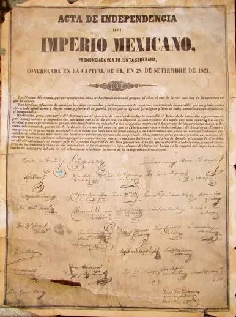

Datos Curiosos
- Doble Acta: México cuenta con dos actas de independencia; la primera se firmó el 28 de septiembre de 1821 declarando un imperio, y la segunda se renovó en 1823 tras establecer la república.
- Reconocimiento tardío: España reconoció la independencia de México hasta 15 años después de consumada, en 1836.
- Cumpleaños presidencial: El Grito se celebra la noche del 15 de septiembre en gran parte debido a una modificación institucional impulsada durante el Porfiriato, ya que coincidía con el cumpleaños de Porfirio Díaz.
- El nombre real de Hidalgo: Su nombre completo era Miguel Gregorio Antonio Ignacio Hidalgo y Costilla y Gallaga Mondarte Villaseñor.
